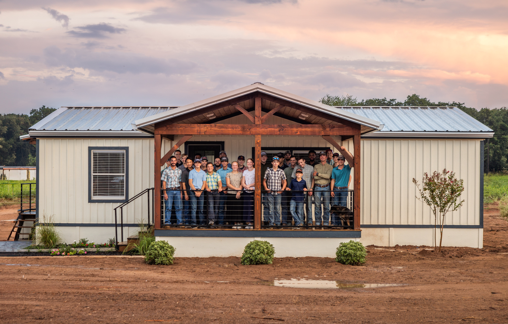
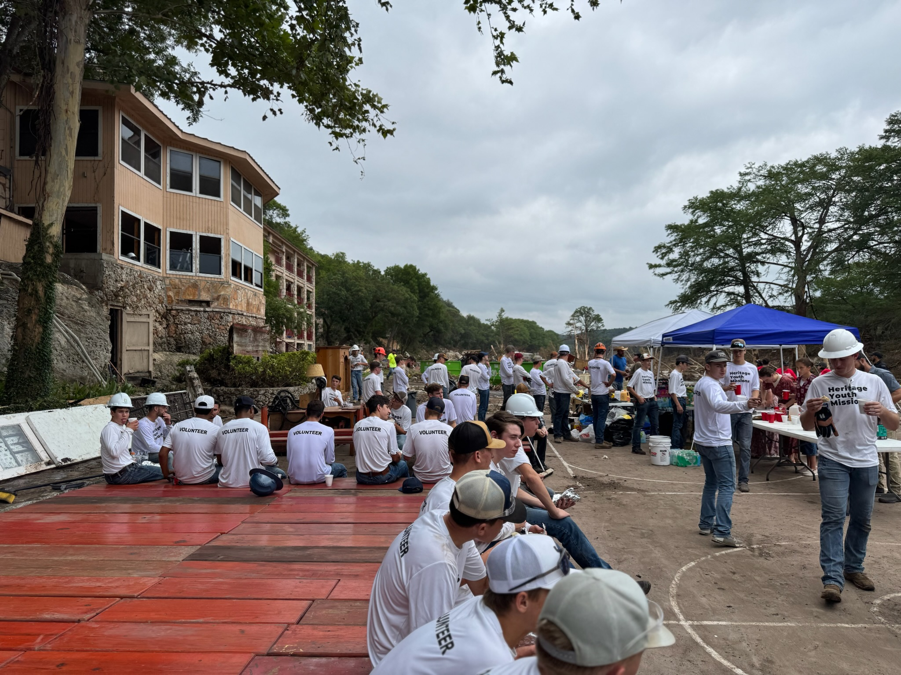
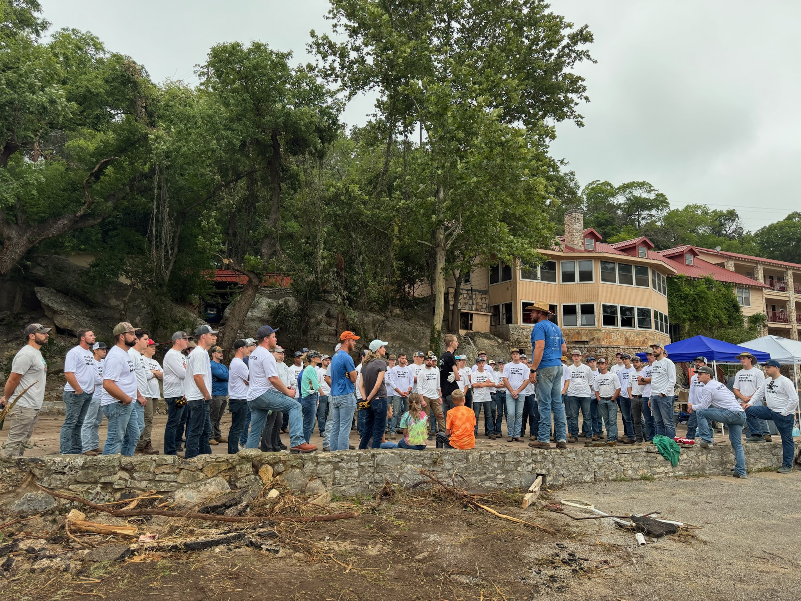
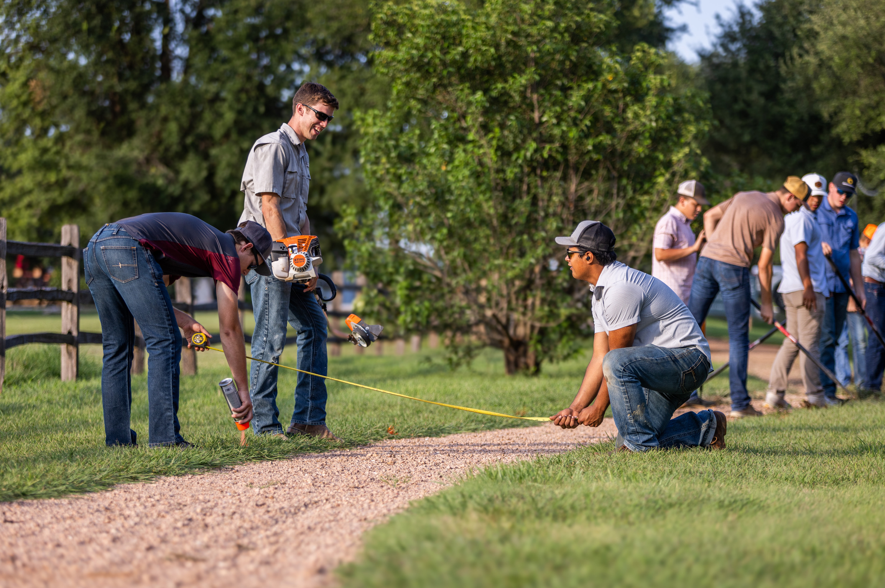
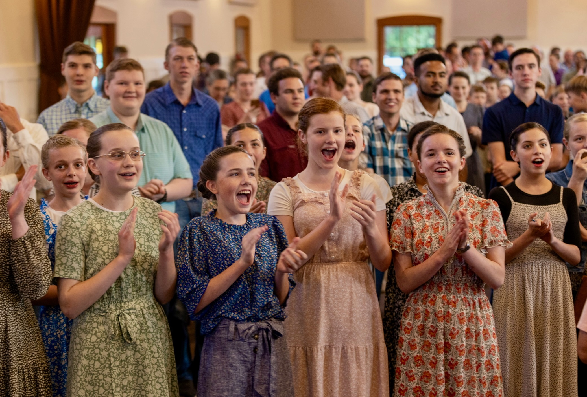
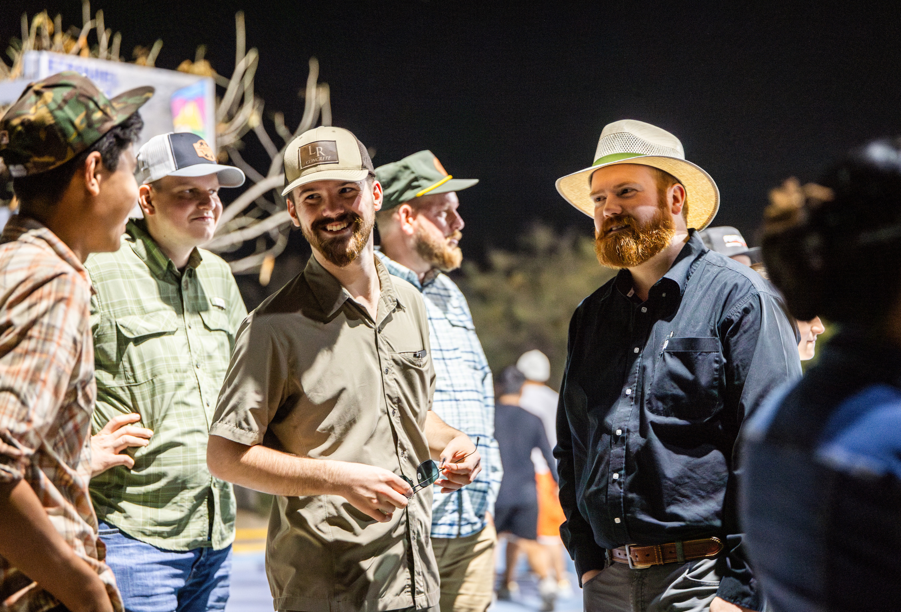
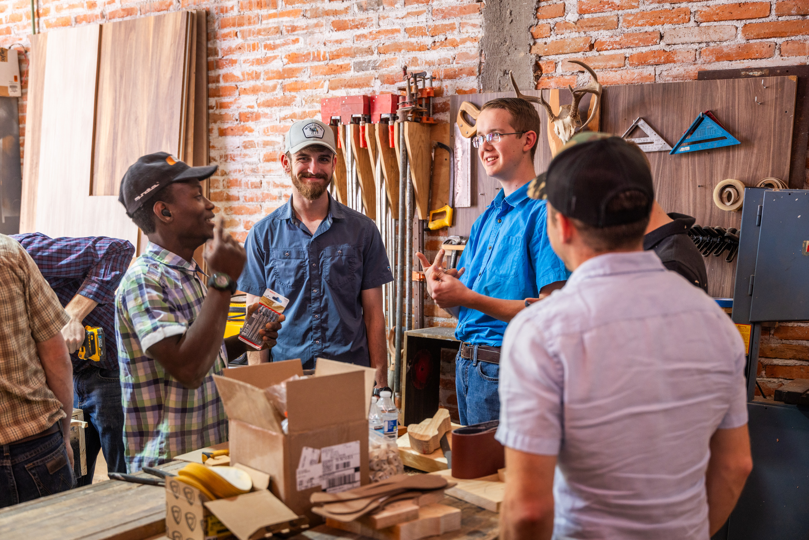
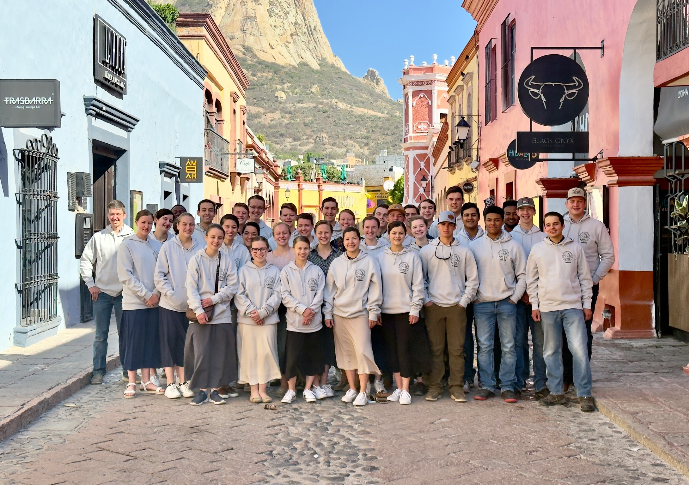
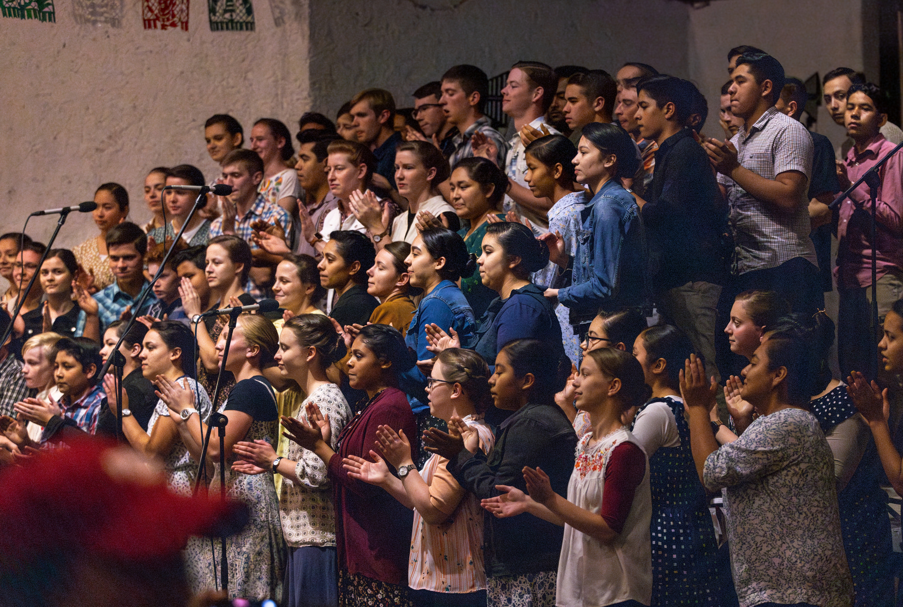

The Gospel of a Whole Life for the Whole World
Seeking to live out the whole life of the Gospel through vibrant worship, service, and global outreach.









A SHARED LIFE
As the youth ministry of Heritage Ministries United, Heritage Youth Missions equips young people for service through vibrant praise, biblical teaching, and global outreach. Join us every Tuesday at 7:30 p.m. in the Fellowship Hall.
Vibrant Worship & Praise
We exalt Jesus and share His Word as a community. Seeking to know God more and follow His will in our daily lives, praise and worship are at the core of our youth mission.
A Rich History
Founded in June 1973 in Manhattan's Lower East Side and later relocating to Waco, Texas, our agrarian roots shaped our commitment to a holistic, shared-life model.
Communal Living & Service
We highly emphasize the 'Body of Christ' where believers live out their faith together. Sharing 'all things in common', our youth support one another in a holistic spiritual journey.
Global Outreach
Our ministry is viewed as a global effort where members discover and use their gifts. From Texas to South Africa and India, our youth carry the gospel to the whole world.
Sustainable Growth
Our focus on crafts, farming, and community gatherings keeps us rooted. Sustainable practices and a commitment to providing for the most vulnerable give our youth purpose.
CORE BELIEFS
The theological foundations that guide how we serve, live, and reach the whole world.
Jesus Christ
We believe Jesus Christ is the Son of God, who lived a sinless life, died for our sins, and rose again to offer us eternal life.
The Inspired Word
The Scriptures are the authoritative Word of God, inspiring our actions and global mission.
Salvation by Faith
Found through faith in the death and resurrection of Jesus Christ, salvation transforms our lives.
What sets Heritage Youth Missions apart is our unwavering connection to Heritage Ministries United. As the youth arm of our parent church, we bring a rare mix of humanity, vibrant praise, and biblical teaching to every mission trip and community partnership.
The journey from the inner city to an agrarian community taught us the value of shared life. We don’t just preach the Gospel; we live the 'whole life' of the Gospel through communal support, service, and a commitment to empowering young believers.
GLOBAL PRESENCE
We practice a global faith. That means we take the Gospel from our core locations in Texas, Idaho, and Wisconsin to nations around the world.
At Heritage Youth Missions, taking the Gospel of a Whole Life to the Whole World is our mindset. We plan, lead, and act as extensions of the communities we build in Waco, Deary, and beyond.
Because we coordinate our efforts with Heritage Ministries United, we’re able to draw upon decades of spiritual guidance, agrarian values, and international connections. This shared strength ensures our youth missions are deeply rooted in faith.
OUR JOURNEY
1973
The Starting Line
Heritage Ministries United is founded in the Lower East Side of Manhattan as an intentional Christian community.
1976
A Move to Waco
Old friends, Community Founders and Dimitri Nassis, reconnect at O’Hare Airport, sparking the idea of pursuing ministry opportunities together.
1994
The Homestead
We established the Heritage Homestead to teach our youth traditional crafts, farming, and the value of hard work in serving God and others.
2010
Global Outreach Begins
Heritage Ministries United begins extending mission trips to international locations, bringing the ‘whole life’ message to the world.
2015
Serving the Vulnerable
Focused efforts are made to bring the gospel and physical aid to those in need, highlighting our holistic approach to ministry.
2018
Empowering Youth
Heritage Youth Missions is officially emphasized, dedicating specific resources to equipping the next generation for service and praise.
2020
Faith in Challenging Times
Throughout the global pandemic, our community remained steadfast, finding new ways to worship, serve locally, and support one another in faith.
2021
Renewed Global Missions
As travel resumed, we rapidly organized youth mission trips to South America and the Caribbean, bringing building materials, medical aid, and the Gospel.
2023
A Growing Generation
Our Tuesday night youth meetings expanded significantly. We see more young people than ever participating in vibrant worship, biblical teaching, and community service.
2023
Deepening Partnerships
We established long-term community partnerships that allow us to consistently support and learn from our partner communities abroad.
2023-24
Building for the Future
Our youth mission continued into Haiti and Guatemala, completing clinic renovations, holding Vacation Bible Schools, and sharing communal life.
Today
The Mission Continues
Heritage Youth Missions expands its reach. With faith, we continue taking the Gospel of a Whole Life to the Whole World, one community at a time.
1973
The Starting Line
Heritage Ministries United is founded in the Lower East Side of Manhattan as an intentional Christian community.
1976
A Move to Waco
Old friends, Community Founders and Dimitri Nassis, reconnect at O’Hare Airport, sparking the idea of pursuing ministry opportunities together.
1994
The Homestead
We established the Heritage Homestead to teach our youth traditional crafts, farming, and the value of hard work in serving God and others.
2010
Global Outreach Begins
Heritage Ministries United begins extending mission trips to international locations, bringing the ‘whole life’ message to the world.
2008
A Penthouse & a Partner
Heritage Youth Missions completes Burling Place and meets its future primary financial backer, a milestone relationship that shapes the firm’s next stage of growth.
2015
Serving the Vulnerable
Focused efforts are made to bring the gospel and physical aid to those in need, highlighting our holistic approach to ministry.
2018
Empowering Youth
Heritage Youth Missions is officially emphasized, dedicating specific resources to equipping the next generation for service and praise.
2020
Faith in Challenging Times
Throughout the global pandemic, our community remained steadfast, finding new ways to worship, serve locally, and support one another in faith.
2021
Renewed Global Missions
As travel resumed, we rapidly organized youth mission trips to South America and the Caribbean, bringing building materials, medical aid, and the Gospel.
2023
A Growing Generation
Our Tuesday night youth meetings expanded significantly. We see more young people than ever participating in vibrant worship, biblical teaching, and community service.
2023
Deepening Partnerships
We established long-term community partnerships that allow us to consistently support and learn from our partner communities abroad.
2023-24
Building for the Future
Our youth mission continued into Haiti and Guatemala, completing clinic renovations, holding Vacation Bible Schools, and sharing communal life.
Today
The Mission Continues
Heritage Youth Missions expands its reach. With faith, we continue taking the Gospel of a Whole Life to the Whole World, one community at a time.